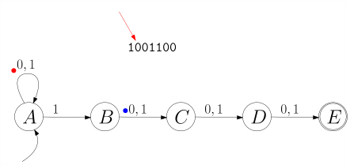
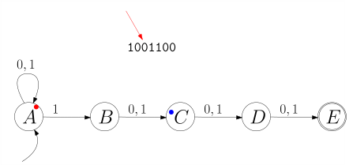
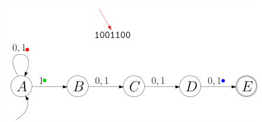
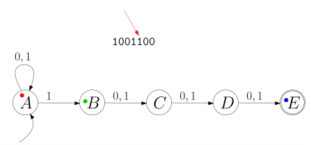
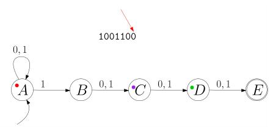

import Section from "~/components/Section";
import Paragraph from "~/components/Paragraph";
import Container from "~/components/Container";
import Carousel from "~/components/Carousel";
import NumberedTitle from "~/components/NumberedTitle";
const Article = () => {
  return (
    <Container>
      <Section
        count={23}
        title_gr="Nichtdeterministische Endliche Automaten"
        title_en="nfsm"
        number={4.3}
        counter="DefCtr"
        counter="ExoCtr"
        path="/lecture-notes23.tsx">
        <div id="link-to-toc">
          <a href="../vorlesungsskript">
            Inhaltsverzeichnis
          </a>
          <a href="04-02-finite-state-machines">
            &lt;&lt; Kapitel 4.2
          </a>
        </div>
        <div
          id="link-to-overview"
          style="text-align: end">
          <a href="/">
            zur Kursübersicht
          </a>
          <a href="04-04-regular-grammar-to-fsm">
            Kapitel 4.4 &gt;&gt;
          </a>
        </div>
        <div id="rightSideWrapper">
          <div class="content">
            <div class="chapter">
              <div class="subChapter">
                <h1 class="hidden-title">
                  <span class="subChapterTitle">
                    4.3 
                    Nichtdeterministische Endliche Automaten
                  </span>
                </h1>
                <Paragraph>
                  Ein nichtdeterministischer Automat ist, informell ausgedrückt, wie ein
                  deterministischer Automat, nur dass es für eine
                  Zustand-Symbol-Kombination beliebig viele ausgehende Pfeile (eventuell
                  gar keinen) geben kann. Hier ist das Beispiel von vorhin, leicht
                  abgewandelt:
                </Paragraph>
                <figure>
                  
                </figure>
                <Paragraph>
                  Ein Pfeil beschreibt also nicht unbedingt einen Zustandsübergang, der
                  <i>
                    geschieht
                  </i>
                  , sondern einen, der{" "}
                  <i>
                    möglich
                  </i>
                  {" "}ist. Formal
                  gesprochen ist \(\delta\) nun keine Funktion mehr, sondern eine
                  <i>
                    Relation
                  </i>
                  :
                </Paragraph>
                <div class="well container theorem">
                  <span class="numbered-title">
                    Definition
                    <NumberedTitle>
                      &ensp;4.3.1{" "}
                    </NumberedTitle>
                  </span>
                  {" "}{" "}
                  <b>
                    (Nichtdeterministischer endlicher Automat, non-deterministic finite state machine)
                  </b>
                  Ein nichtdeterministischer endlicher Automat besteht aus
                  <ul>
                    <li>
                      einem endlichen Eingabealphaet \(\Sigma\),
                    </li>
                    <li>
                      einer endlichen Menge \(Q\) von Zuständen,
                    </li>
                    <li>
                      einem Startzustand \(\qstart \in Q\),
                    </li>
                    <li>
                      einer Menge \(F \subseteq Q\) von akzeptierenden Endzuständen,
                    </li>
                    <li>
                      einer Zustandsübergangsrelation \(\delta \subseteq Q \times \Sigma
                      \times Q\).
                    </li>
                  </ul>
                  Formal gesehen ist also ein Automat ein Quintupel \(M = (\Sigma, Q,
                  \qstart, F, \delta)\).
                </div>
                Von nun an bezeichnen wir endliche Automaten auch als
                <i>
                  deterministische
                </i>
                {" "}endliche Automaten, um den Unterschied zu den
                nichtdeterministischen zu verdeutlichen. Wenn in einem deterministischen
                endlichen Automaten \(\delta(q,x) = q'\) war, so hatte das die Bedeutung
                <i>
                  wenn der Automat im Zustand \(q\) ist und \(x\) liest, so geht er in Zustand \(q'\) über
                </i>
                ; wenn nun in einem nichtdeterministischen Automaten \((q,x,q') \in
                \delta\) gilt, so bedeutet das,
                <i>
                  wenn der Automat im Zustand \(q\) ist und \(x\) liest, so kann er in
                  Zustand \(q'\) übergehen
                </i>
                . Analog zu den deterministischen Automaten definieren wir eine
                erweiterte Zustandsübergangsrelation.
                <div class="well container theorem">
                  <span class="numbered-title">
                    Definition
                    <NumberedTitle>
                      &ensp;4.3.2{" "}
                    </NumberedTitle>
                  </span>
                  {" "}{" "}
                  <b>
                    (Erweiterte Zuständsübergangsfunktion)
                  </b>
                  .
                  <Paragraph>
                    Für einen nichtdeterministischen endlichen Automaten \((\Sigma, Q,
                    \qstart, F, \delta)\) definieren wir die
                    <i>
                      erweiterte Zustandsübergangsrelation
                    </i>
                    \(\hat&#123;\delta&#125;\subseteq Q \times \Sigma^* \rightarrow Q\) als die
                    Menge aller Zustand-Wort-Zustand-Tripel \((q,x_1 x_2 \dots
                    x_n,q')\), für die wir Zwischenzustände \(q = \qstart, q_1, q_2,
                    \dots, q_n = q'\) finden können mit $$ (\qstart, x_1, q_1), (q_1,
                    x_2, q_2), \dots, (q_&#123;n-1&#125;, x_n, q_n) \in \delta $$ Dies schließt
                    den Fall \(n = 0\) mit ein, also \((q, \epsilon, q) \in
                    \hat&#123;\delta&#125;\). Wie zuvor schreiben wir \(q
                    \stackrel&#123;\alpha&#125;&#123;\rightarrow&#125; q'\).
                  </Paragraph>
                  <Paragraph>
                    Die von \(M\) akzeptierte Sprache ist $$ L(M) := \&#123;\alpha \in
                    \Sigma^* \ | \ \textnormal&#123; es gibt ein &#125; q \in F \textnormal&#123; mit &#125;
                    \qstart \stackrel&#123;\alpha&#125;&#123;\rightarrow&#125; q \&#125; $$
                  </Paragraph>
                </div>
                <div class="well container theorem">
                  <span class="numbered-title">
                    Beobachtung
                    <NumberedTitle>
                      &ensp;4.3.3{" "}
                    </NumberedTitle>
                  </span>
                  Sei \(M = (\Sigma, Q, \qstart, F, \delta)\) ein nichtdeterministischer
                  endlicher Automat. Dann gibt es eine reguläre Grammatik \(G\) mit
                  \(L(G) = L(M)\).
                </div>
                <Paragraph>
                  Wir führen hier den Beweis nicht noch einmal; er ist mehr oder weniger
                  identisch mit dem Beweis von
                  <a href="./04-02-finite-state-machines#theorem-fsm-regular">
                    &ensp;Theorem 4.2.5{" "}
                  </a>
                  ; wir haben nämlich in jenem Beweis nirgends verwendet, dass
                  \(\delta\) eine{" "}
                  <i>
                    Funktion
                  </i>
                  {" "}ist, und daher geht mit einem
                  \(\delta\), das eine{" "}
                  <i>
                    Relation
                  </i>
                  {" "}ist, alles ganz genau gleich.
                  Allerdings gilt nun auch der Umkehrschluss: zu einer regulären
                  Grammatik gibt es einen nichtdeterministischen endlichen Automaten:
                </Paragraph>
                <div
                  id="theorem-nfsm-regular"
                  class="well container theorem">
                  <span class="numbered-title">
                    Theorem
                    <NumberedTitle>
                      &ensp;4.3.4{" "}
                    </NumberedTitle>
                  </span>
                  Sei \(G = (\Sigma, N, P, S)\) eine reguläre Grammatik. Dann gibt es
                  einen nichtdeterministischen endlichen Automaten \(M\) mit \(L(G) =
                  L(M)\).
                </div>
                <div class="well container">
                  {" "}{" "}
                  <b>
                    Beweis.
                  </b>
                  Unser Automat hat als Zustandsmenge \(N\), die Menge der
                  nichtterminalen Symbole und als Startzustand \(S\), das Startsymbol
                  der Grammatik \(G\). Wir definieren \(\delta\), indem wir jeden
                  \(G\)-Pfeil in einem \(M\)-Pfeil umwandeln: eine Produktion $$ X
                  \rightarrow a Y $$ in \(G\) wird dann zu $$ (X, a, Y) \in \delta $$
                  also einem Pfeil \(X \stackrel&#123;a&#125;&#123;\rightarrow&#125; Y\) in \(M\). Für jede
                  Regel der Form \(X \rightarrow \epsilon\) machen wir \(X\) zu einem
                  Endzustand.
                  <Paragraph>
                    Was aber mit Regeln der Form \(X \rightarrow Y\)? Hierfür könnte man
                    Nichtdeterministische Automaten mit \(\epsilon\)-Übergängen
                    definieren, die also vom Zustand \(X\) nach \(Y\) wechseln können,
                    ohne ein Eingabesymbol zu lesen; wir gehen hier einen anderen Weg
                    und verweisen auf
                    <a href="./04-01-regular-grammars#theorem-regular-simplified">
                      &ensp;Theorem 4.1.7{" "}
                    </a>
                    , welches uns erlaubt, Regeln der Form \(X \rightarrow Y\) und \(X
                    \rightarrow a\) zu eliminieren.
                    <span class="qed">
                      \(\square\)
                    </span>
                  </Paragraph>
                </div>
                <div class="well container theorem">
                  <span class="numbered-title">
                    Beispiel
                    <NumberedTitle>
                      &ensp;4.3.5{" "}
                    </NumberedTitle>
                  </span>
                  <Paragraph>
                    Wir betrachten abermals die
                    <a href="./04-01-regular-grammars#example-aaabb">
                      &ensp;reguläre Grammatik aus dem vorherigen Kapitel 4.1{" "}
                    </a>
                    : $$\begin&#123;align*&#125; S&amp;\rightarrow \epsilon \ |\ a S \ | \ b T \\ T&
                    \rightarrow \epsilon \ | \ b T \ \end&#123;align*&#125;$$ und auch den
                    (falschen) endlichen Automaten, den wir im letzten Kapitel dafür
                    gebaut haben:
                  </Paragraph>
                  <figure>
                    
                  </figure>
                  <Paragraph>
                    Wir sehen nun, dass dies genau der nichtdeterministische Automat
                    ist, den wir nach{" "}
                    <a href="#theorem-nfsm-regular">
                      &ensp;Theorem 4.3.4{" "}
                    </a>
                    bauen können. Die Zustandsübergangsrelation \(\delta\) ist $$ \delta
                    = \&#123;(S,a,S), (S,b,S), (T,b,T) \&#125; \ . $$ Jeder Zustand ist ein
                    Endzustand, allerdings heißt das nicht, dass der Automat jedes Wort
                    akzeptiert. Für \(\alpha = ba\) beispielsweise gibt es keinen
                    Zustand \(q\) mit \(S \stackrel&#123;ba&#125;&#123;\rightarrow&#125; q\), geschweige
                    denn einen akzeptierenden Endzustand. Daher gilt: \(ba \not \in
                    L(M)\).
                  </Paragraph>
                </div>
                <div class="well container theorem">
                  <span class="numbered-title">
                    Beispiel
                    <NumberedTitle>
                      &ensp;4.3.6{" "}
                    </NumberedTitle>
                  </span>
                  <Paragraph>
                    Wir betrachten die
                    <a href="./04-01-regular-grammars#exercise-no-a-or-no-b">
                      &ensp;reguläre Grammatik aus Übungsaufgabe 4.1.7{" "}
                    </a>
                    :
                  </Paragraph>
                  $$\begin&#123;align*&#125; S&amp;\rightarrow A \ | \ B \\ A&amp;\rightarrow \epsilon \
                  | \ b A \ | \ c A \\ B&amp;\rightarrow \epsilon \ | \ a B \ | \ c B
                  \end&#123;align*&#125;$$
                  <Paragraph>
                    Bevor wir einen nichtdeterministischen Automaten bauen können,
                    müssen wir erst die Produktionen der Form \(X \rightarrow Y\)
                    eliminieren bzw. ersetzen. Wenn Sie Aufgabe 4.1.7 gelöst haben,
                    haben Sie wahrscheinlich in etwa folgende Grammatik erhalten:
                  </Paragraph>
                  $$\begin&#123;align*&#125; S&amp;\rightarrow \epsilon \ | \ bA \ | \ cA \ | \ aB \ |
                  \ cB\\ A&amp;\rightarrow \epsilon \ | \ bA \ | \ cA \\ B&amp;\rightarrow
                  \epsilon \ | \ aB \ | \ cB \end&#123;align*&#125;$$ Also insgesamt 11 statt 8
                  Produktionen. Alle Nichtterminale erlauben auf ihrer rechten Seite ein
                  \(\epsilon\) und werden so zu akzeptierenden Zuständen. Die
                  Zustandsübergangsrelation \(\delta\) ist also $$\begin&#123;align*&#125; \delta&
                  = \&#123;(S,b,A), (S,c,A), (S,a,B), (S,c,B), (A,b,A), (A,c,A), (B,a,B),
                  (B,c,B)\&#125; \end&#123;align*&#125;$$ Der nichtdeterminische Automat schaut also so
                  aus:
                  <figure>
                    
                  </figure>
                </div>
                <div
                  id="exercise-divisibility"
                  class="well well-lg numbered-exercise container">
                  <span class="numbered-title">
                    Übungsaufgabe
                    <NumberedTitle>
                      &ensp;4.3.1{" "}
                    </NumberedTitle>
                  </span>
                  Sei \(\Sigma = \&#123;1\&#125;\) und \(L_k := \&#123;1^n \ | \textnormal&#123; \)\(n\)\( ist
                  durch \)\(k\)\( teilbar&#125; \&#125;\). Schreiben Sie für \(L_k\) einen
                  deterministischen endlichen Automaten.
                  <Paragraph>
                    Schreiben Sie eine reguläre Grammatik für die Sprache \(L_5 \cup
                    L_7\), also die Strings aus 1, deren Länge durch 5 oder durch 7
                    teilbar ist.
                  </Paragraph>
                  <Paragraph>
                    Zeichnen Sie nun einen nichtdeterministischen endlichen Automaten
                    für \(L_5 \cup L_7\).
                  </Paragraph>
                </div>
                <h2>
                  Nichtdeterministische endliche Automaten deterministisch machen
                </h2>
                <Paragraph>
                  Wir werden nun zeigen, dass man zu jedem nichtdeterministischen
                  Automaten \(M\) einen äquivalenten deterministischen Automaten \(M'\)
                  bauen kann. Bevor wir eine allgemeine Konstruktion zeigen, fragen wir
                  uns, wie wir beispielsweise für den nichtdeterministischen endlichen
                  Automaten \(M\):
                </Paragraph>
                <figure>
                  
                </figure>
                <Paragraph>
                  und das Eingabewort \(\alpha = 1001100\) überprüfen können, ob
                  \(1001100 \in L(M)\) gilt. Einem determinischen endlichen Automaten
                  können wir ja das Eingabewort einfach füttern und schauen, was der
                  Automat tut; bei nichtdeterministischen Automaten müssen wir schauen,
                  was er alles tun könnte. Wir plazieren einen kleinen farbigen Punkt in
                  jeden Zustand, in dem sich der Automat befinden könnte; am Anfang hat
                  der Startzustand \(A\) einen roten Punkt.
                </Paragraph>
                <figure class="centered-figure well container">
                  <Carousel>
                    
                    
                    
                    
                    
                    
                    
                    
                    
                    
                    
                    
                    
                    
                    
                    
                    
                    
                    
                    
                    
                    
                  </Carousel>
                </figure>
                <Paragraph>
                  Am Ende landet der grüne Punkt im Zustand \(E\). Das Wort ist also in
                  \(L(M)\). Das können wir auch ganz allgemein tun. Wenn Zustand \(q\)
                  einen "Punkt" hat und Zeichen \(x\) gelesen wird, dann teilt sich
                  dieser Punkt und plaziert einen Kind-Punkt in jedem Zustand \(q'\),
                  für den \(q \stackrel&#123;x&#125;&#123;\rightarrow&#125; q'\) gilt. Formal gesprochen:
                  für eine Menge \(R \subseteq Q\) von Zuständen (die, die gerade einen
                  "Punkt" haben) und ein Eingabe-Symbol \(x\) definieren wir
                  $$\begin&#123;align*&#125; \Delta(R, x) := \&#123;q' \in Q \ | \ \textnormal&#123; es gibt &#125;
                  \ q \in R \textnormal&#123; mit &#125; q \step&#123;x&#125; q'\&#125; \end&#123;align*&#125;$$ Für ein
                  Eingabewort \(\alpha= x_1 \dots x_n\) fangen wir nun mit \(R_0 =
                  \&#123;\qstart\&#125;\) an, das entspricht dem einen roten Punkt auf dem
                  Startzustand, und berechnen dann jeweils \(R_i = \Delta(R_&#123;i-1&#125;,
                  x_i)\); wenn die Menge \(R_n\) einen akzeptierenden Endzustand enthält
                  (dieser also am Ende einen "Punkt" hat), gilt \(\alpha \in L(M)\).
                </Paragraph>
                <Paragraph>
                  Treten Sie einen Schritt zurück und betrachten, was wir mit \(\Delta\)
                  definiert haben: wir haben eine Zustandsübergangsfunktion definiert,
                  die nun aber nicht auf Zuständen sondern auf Zustands
                  <i>
                    mengen
                  </i>
                  operiert. Das heißt, im Gegensatz zu \(\delta\), das eine Funktion
                  \(\delta: Q \times \Sigma \rightarrow Q\) ist, ist $$\begin&#123;align*&#125;
                  \Delta: 2^Q \times \Sigma \rightarrow 2^Q \ . \end&#123;align*&#125;$$ Wenn Sie
                  die Schreibweise \(2^Q\) nicht kennen: dies ist die Potenzmenge von
                  \(Q\), also die Menge aller Untermengen, was die leere Menge
                  \(\emptyset\) und die "volle Menge" \(Q\) selbst miteinschließt. Wir
                  haben also folgendes Theorem:
                </Paragraph>
                <div
                  id="nfsm-to-fsm"
                  class="well container theorem">
                  <span class="numbered-title">
                    Theorem
                    <NumberedTitle>
                      &ensp;4.3.7{" "}
                    </NumberedTitle>
                  </span>
                  {" "}{" "}
                  <b>
                    (Einen nichtdeterministischen endlichen Automaten deterministisch
                    machen).
                  </b>
                  Sei \(M = (\Sigma, Q, \qstart, F, \delta)\) ein nichtdeterministischer
                  Automat; dann heiße der deterministische Automat \(M' = (\Sigma, 2^Q,
                  \&#123;\qstart\&#125;, \mathcal&#123;F&#125;, \Delta)\) mit Endzustandsmenge
                  \(\mathcal&#123;F&#125;\) definiert als $$\begin&#123;align*&#125; \mathcal&#123;F&#125; := \&#123;X
                  \subseteq Q \ | \ X \cap F \ne \emptyset\&#125; \end&#123;align*&#125;$$ und
                  Zustandsübergangsfunktion \(\Delta\) definiert als $$\begin&#123;align*&#125;
                  \Delta : \quad&amp;2^Q \times \Sigma \rightarrow 2^Q \\&amp;(R, x) \mapsto
                  \&#123;q' \in Q \ | \ \textnormal&#123; es gibt &#125; \ q \in R \textnormal&#123; mit &#125; q
                  \step&#123;x&#125; q'\&#125; \end&#123;align*&#125;$$ der{" "}
                  <i>
                    Potenzmengenautomat
                  </i>
                  . Es gilt
                  \(L(M) = L(M')\).
                </div>
                <Paragraph>
                  Wir folgern also
                </Paragraph>
                <div
                  id="regular-grammar-to-fsm"
                  class="well container theorem">
                  <span class="numbered-title">
                    Theorem
                    <NumberedTitle>
                      &ensp;4.3.8{" "}
                    </NumberedTitle>
                  </span>
                  Zu jeder regulären Sprache \(L\) gibt es einen deterministischen
                  endlichen Automaten \(M\) mit \(L(M) = L\).
                </div>
                <div class="well container theorem">
                  <span class="numbered-title">
                    Beispiel
                    <NumberedTitle>
                      &ensp;4.3.9{" "}
                    </NumberedTitle>
                  </span>
                  Der obige nichtdeterminische Automaten \(M\), der die Sprache aller
                  Wörter, deren viertletztes Zeichen eine 1 ist, akzeptiert, hat fünf
                  Zustände. Sein Potenzmengenautomat \(M'\) hätte also \(2^5 = 32\).
                  Allerdings sehen wir, dass alle "relevanten" Zustände von \(M\) den
                  Zustand \(A\) enthalten. Dieser wird nie verschwinden. Also sehen wir,
                  dass man \(M'\) mit 16 Zuständen implementieren kann (die anderen,
                  die, die nicht \(A\) enthalten, sind{" "}
                  <i>
                    unerreichbar
                  </i>
                  ). Da 16
                  immer noch recht groß für eine Abbildung ist, nehmen wir uns die
                  Sprache aller Wörter, deren{" "}
                  <i>
                    drittletztes Zeichen
                  </i>
                  eine 1 ist. Der nichtdeterministische Automat hierfür ist
                  <figure>
                    
                  </figure>
                  <Paragraph>
                    Der Potenzmengenautomat hat die Zustandsmenge
                  </Paragraph>
                  <figure class="centered-figure well" />
                  <Paragraph>
                    Wenn wir uns vorstellen, dass wir vor das Eingabewort \(\alpha\) die
                    Zeichen 000 stellen, also \(\alpha\) durch \(000\alpha\) ersetzen,
                    dann codiert jeder Zustand genau die letzten drei Zeichen des
                    Eingabewortes, die der Automat gelesen hat. Der Zustand \(ACD\)
                    bedeutet zum Beispiel
                    <i>
                      die letzten drei Zeichen waren \(110\)
                    </i>
                    {" "}{" "}
                  </Paragraph>
                </div>
                <Paragraph>
                  Im folgenden Unterkapitel werden wir alle Transformationen, die wir
                  bisher gesehen haben, an einem konkreten Beispiel anwenden.
                </Paragraph>
              </div>
            </div>
          </div>
        </div>
      </Section>
    </Container>
  );
};

export default Article;